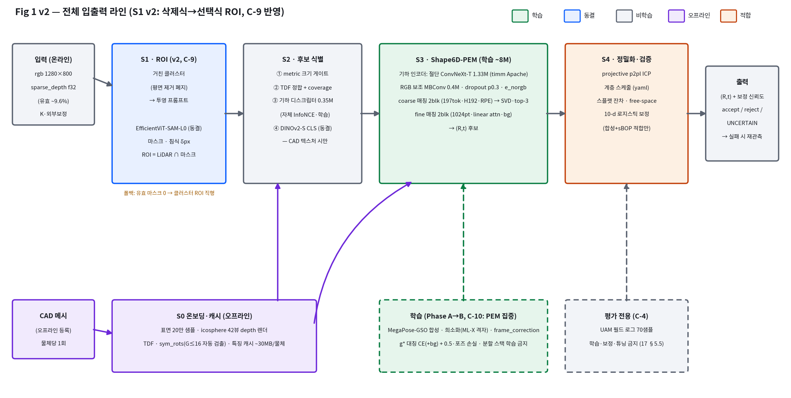

v1.1 · 2026-07-31 (v1.0: 07-30) · 개정 이력: v1.1 — C-9(S1 v2 선택식 ROI)·C-10(분할 무학습 확정)·C-11(Phase A 종료 규칙) 등재, D-10 해소, Phase A 현황 반영, 문헌 감사(22) 근거 연결 · 우선순위 규약: 확정 사항이 타 문서와 충돌하면 본 문서가 우선하며, 상세 근거·수치는 원문서(03·10·13~19·22)를 따른다. 미결 항목은 §8 대장에만 존재한다 — 본문에 흩어진 "결정 대기"는 없다.
이 문서가 확정하는 것
① 무엇을 만드는가 — 희소 LiDAR 기하 주도 제로샷 6D 포즈, SAM-6D 2단 점 매칭 구조의 클린룸 재구현, 온라인 ~8M, Orin NX <1s.
② 무엇으로 채우는가 — 슬롯 13개의 네트워크·가중치·데이터를 라이선스 초록 자산만으로 확정 (조건부 자산은 전부 분리 가능한 보조 경로).
③ 어떻게 학습·검증하는가 — Phase 0(완료)→A→B→C, UAM은 전면 평가 전용, 게이트는 Δ(v0-geo)·ICP 수렴반경·밀도 곡선·Orin 실측.
④ 무엇이 아직 미정인가 — §8 대장의 잔여 7건(D-5·D-10 해소 반영)뿐이며, 어느 것도 진행을 막지 않는다.
~8M / 7GF온라인 예산 (인코더 2.4M + 매칭 5.5M) — Orin NX <1s
(R,t) + 보정 신뢰도 + 판정 사유(10-d 특징 + calibrator_version) · 실패 시 정직한 reject → 재관측 요청
학습 자원
RTX PRO 6000 Blackwell 96GB ×1 · MegaPose-GSO 508GB 디스크 보유
영구 폴백
v0-geo (무학습 전체 사슬) — 골든 실측 1.60mm/0.254°, 어떤 게이트가 실패해도 배포 가능
설계의 세 기둥 (실측으로 선 것).
① 3D-3D 정식화 — z 정밀도(10mm@3m)는 재투영 계열로 원리적으로 불리 (11 §1).
② 매칭(비교기) 정식화 — CAD 측 입력 없는 자세 학습은 제로샷 불성립: top-1 0.99→0.147, ICP 수렴반경 98.8%→5.8% 실측 (15 §4).
③ 오브젝트 측 전량 S0 캐시 — 비용 절감이 아니라 제로샷의 필요조건이자, 104M→8M 축소의 본체.
2최종 아키텍처 — 전체 라인과 슬롯 확정표

Fig 1 (v2). 전체 입출력 라인 — S1 v2(C-9) 반영판: RGB 마스크 ROI 선택 주경로 + 클러스터=프롬프트 시드 + 기하 폴백. 색 = 학습(초록)/동결(파랑)/비학습(회색)/오프라인(보라)/적합(주황). 생성: assets_20/make_figp_v2.py · 구판(v1, 평면 제거 경로)은 17 Fig P에 보존. PEM 내부 상세는 15 Fig A.
단계
슬롯
확정 (라이선스 실사 반영판)
가중치
라이선스
비고
S1
ROI·프롬프트 (v2)
RGB 마스크 ROI 선택 주경로 — 거친 클러스터(평면 제거 폐지) → 투영 박스/점 프롬프트 → 마스크(침식 δpx) ∩ LiDAR = ROI · 폴백: 유효 마스크 0 → 클러스터 ROI 직행
전면 평가 전용 홀드아웃 — 70샘플 하네스 + 보정기 홀드아웃. 학습 입력·보정 적합·증강 파라미터 적합 금지
17 §5.5 정책 발효
D2-a 실측
자체
센서 특성화 정본 — 합성 희소화 파라미터 검증·갱신
ML-X RFQ 대기
Table 3. 새로 수집할 학습 데이터가 없다 — 전 Phase가 디스크 보유분 + 합성 생성물로 성립. 라벨: 포즈 GT는 MegaPose 전량, 대칭 g*는 S0 sym_rots, 뷰 분해 잔차 p50 12.4° 검증 완료.
5실행 계획 — Phase 0(완료) / A / B / C
Phase
기간
내용 · 산출물
게이트
0 위생
완료 2026-07-30
✓ config 단일 출처화(A-1: from_config 주입) ✓ 보정기 로드 배선+버전 기록(A-2) ✓ 골든 테스트 1.60mm/0.254°(A-3) ✓ TDF coverage 항(A-4) ✓ 합성 희소화 정식화 · 테스트 40+1xf · 잔여: M0-2 Orin 실측(HW 대기)·BOP 다운로드
—
A 파일럿
2주 진행 중
최소 매칭부 클린룸 구현(coarse 2blk → soft 대응 → SVD, 포즈 회귀 과제 — 뷰 분류 폐기) → 인코더 재선정. 현황(07-31): a1 26.6% vs a0 18.3% vs 초기 10.0% (미학습 32종 ≤30°, reports/ 자동 추적) — 첫 유효 제로샷 신호 확보. 잔여는 R1·R2·R3 + 종료 규칙 C-11. 규약: 수렴 확인 의무 · 후보별 lr · 시드 3종 · 팔레트 CAD 평가 포함
G-A: 미학습 물체 ≤30° 진입률이 무학습 기준선 상회 + 밀도 낙폭 곡선 + TRT 빌드 → 인코더 1종 확정
B 본학습
4~5주
full PEM(인코더+coarse2+fine2, ~8M) — GSO ~104만 샘플 · 증강 5종+레짐 2종 · g* 손실 · bs64+activation ckpt(CAD측 2뷰 gradient — 활성화 3배) · 평가 훅 500/10k/25k
G-B: Δ(v0-geo)>0 (팔레트 스위트) + UAM 70샘플 ≥ v0-geo + 밀도 곡선 유지
C 증류·보정
2~3주
① 매칭 축소판 자기 증류(H192→128·3→2blk, 각 1/3 스케줄) ② S2 디스크립터 InfoNCE ③ 보정기 적합(합성+sBOP — 라벨 진단 선행) ④ TRT 3분할 엔진 → Orin E2E
학습 자원 배분 — 분할 무학습 확정: SAM 계열 로컬 학습·파인튜닝 전면 배제(동결 고정), 로컬 GPU 학습은 PEM(S3)+S2 디스크립터에 100% 집중. 분할 병목 신호 시에도 순서는 프롬프트/보정 → 그래도 불충분할 때만 재론. 근거: 직접 비교 4편 전부 분할 무학습·포즈망만 학습(22 §4) + 규모 비대칭(SA-1B 대비 로컬 47k) + UAM 학습 금지(C-4)와 정합
07-31
22 §5-A · 대화 결정
C-11
Phase A 재학습 종료 규칙: R1(g* 마스터 기반 — 22 감사 유일 '수정' 판정)·R2(학습 뷰 2→6 — 문헌 관례 이탈 실험)·R3(a2 절단판) 완료 시 무조건 1차 정산. 연장 허용: ① 30ep 말 수렴 슬로프 잔존 시 60ep 1런 ② R1×R2 상호작용 의심 시 조합 1런 — 이 두 가지뿐. 런당 ≤30° 개선 +1%p 미만이면 그 축 종료, 잔여 갭은 데이터 부족분으로 간주하고 Phase B 전환 (물체 ~1k 포화·이미지 ~1M 포화 — 22 §6 문헌 근거)
07-31
22 §5-C·§6 · 21
8미결 대장 (D — 잔여 7건, D-5·D-10 해소)
ID
항목
기한
차단 범위
기본값 (미결 시 적용)
D-1/4
ShapeNet 수신 vs Objaverse 대체 (다양성 확장)
Phase B 전
없음
GSO-only + 낙폭을 UAM 평가로 측정
D-2
DINOv3·SAM 3 상업 약관 법무 검토
Phase C 전
보조 경로만
DINOv2-S · 증류 생략 · SAM 3 내부용만
D-3
BOP vs UAM 게이트 충돌 시 우선순위
Phase B 전
게이트 해석
제안: UAM 우선 (BPC 2025 실증)
D-5
~~ImageNet 가중치 약관~~ → 해소: timm Apache 태그 확인·고정
—
—
완료 (19 §3.1)
D-6
SAM-6D·GeDi 저자 라이선스 문의 (허가 시 옵션 복원)
여유 시
없음
클린룸·자체학습으로 진행
D-7
팔레트류 학습용 CAD 소싱 (평가용과 분리)
Phase B 전
팔레트 학습분
GSO 팔레트형 서브셋으로 개시
D-8
free_viol_max 0.05(03 원안) vs 0.15(현행 정본화)
Phase C 보정 시
S4 임계
0.15 유지 (공표 수치 보호)
D-10
~~정밀도 목표 개정 후보 0.1°/1mm~~ → 해소 (2026-07-31): 사용자 정정으로 1° / 1cm 재확정 — 정본 C-1(10mm/≤1° @3m) 유지
완료
—
0.1°/1mm 검토(21 §5)는 감도 분석 기록으로 보존 — 바이어스 바닥 ≈6.1mm이 1cm 예산의 61%를 차지한다는 사실은 여전히 유효한 마진 경고
Phase A를 최소 구성(coarse 1blk)부터 · 03 §6.5에 구조가 자체 언어로 완기술 · 클린룸 규약
CAD(조밀)↔장면(희소) 밀도 10배 비대칭 붕괴
높음
밀도 스윕이 G-A 1급 판정 → 붕괴 시 후보 (b)/(c) 전환 (10 §6.7 문헌 실증)
1s 예산 미달
중간
M0-2 조기 실측 → 계층화 ICP·해상도 축소 순 삭감 (05 #1)
GSO-only 다양성 부족
중간
비교기 학습 구조상 과대평가 가능성(16 §3) — UAM 평가로 실측 판정
폴백 사다리 — 프로젝트가 0이 되는 경로는 없다
1단 full v3 (PEM 학습 성공) → 2단 Phase C 증류 실패 시 full-size PEM을 PC급으로 (엣지는 v0-geo) → 3단 Phase B 실패 시 v0-geo + Phase 0 개선분(coverage·config·보정 배선)으로 배포 — 골든 1.60mm/0.254°는 이미 요구 스펙의 6배 여유.
10일정과 다음 액션
2026-07 Phase 0 ██ 완료 (07-30) config·보정배선·골든·coverage·희소화 + 테스트 41
2026-07~08 Phase A ██▓▓ 진행 중 (07-31) 매칭부 구현·안정화·a0/a1 비교 완료 → R1·R2·R3 마감 [G-A]
├─ 병행: S1 v2 하네스(C-9) · M0-2 Orin 실측 · BOP 다운로드 · D-3/D-7 결정
2026-08~09 Phase B ████████ (4~5주) full PEM 본학습 — GSO 861종 확보 선행 [G-B]
2026-09~10 Phase C ██████ (2~3주) 증류·보정·TRT·Orin E2E [G-C]
합계 ~10주 (08 프레임 정합)
순번
다음 액션
성격
1
R1 g* 마스터 기반 전환(스펙 03 §9.3 준수) → 재학습·리포트 Δ 판정 — 이후 R2(뷰6)·R3(a2), 종료 규칙은 C-11